How UI Events are Handled
By exposing a function from your Flash UI, you can now tell your Flash UI to do something. The next question would be how to handle events like button presses, so that the Flash UI can tell your project that something has happened.
In this section you will learn how to add a button to your Flash UI, enable the cursor when the UI opens and recognize, in your game project, when the button is clicked. Through Flash UI events you can handle simple events like a button press, and also handle data like text inputs from a UI control and the actual logic inside your game project.
Exposing an Event from Flash
Scaleform 3
- Begin by creating a new Symbol in your Flash project library. We will call this Symbol "BasicButton" and change its type to a Button.
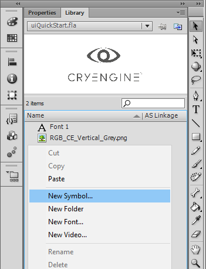
New Symbol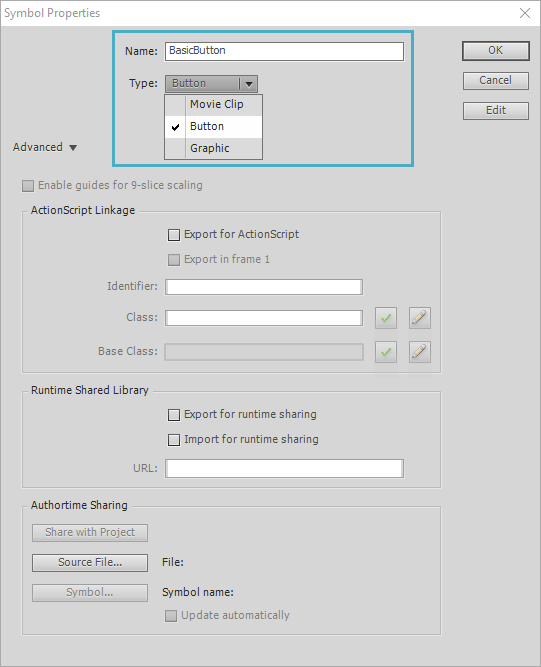
Set Type to "Button" - A new window will appear for your Symbol contents; here, draw a simple rectangle using the Rectangle Tool (R).
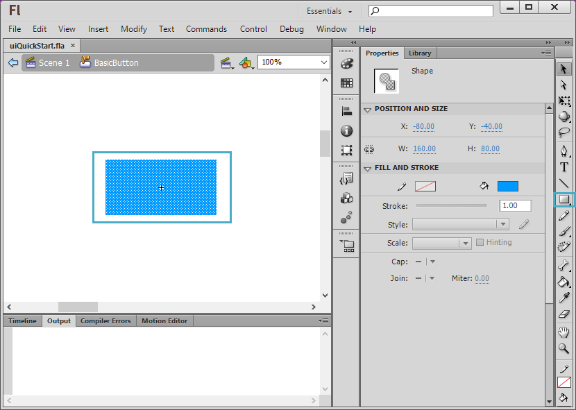
Draw a simple rectangle - You can now return to your scene and from your Library, place an instance of your new BasicButton Symbol within the scene.
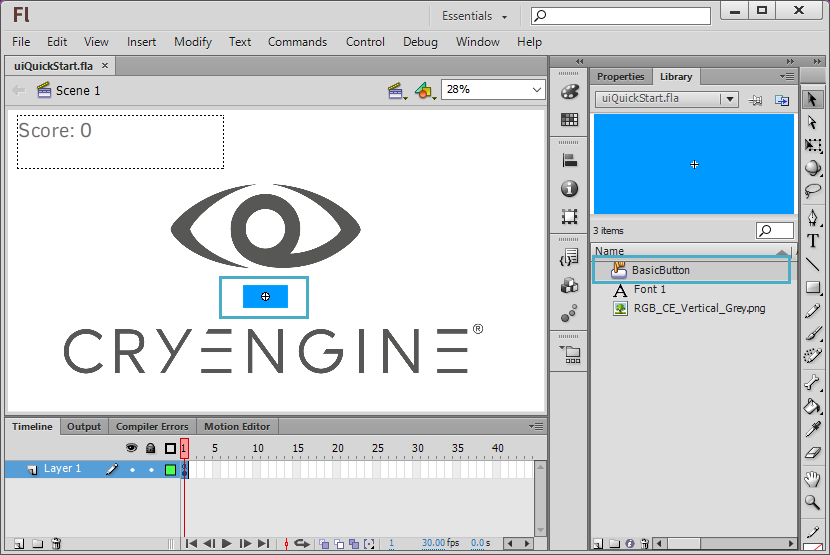
Place an instance of the BasicButton in your scene - Name this instance of the BasicButton Symbol to "btnTest". This is how this button will be referenced via ActionScript.
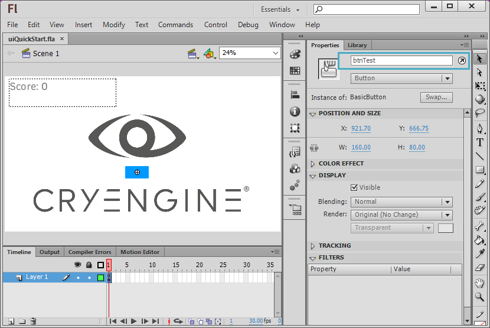
Name the symbol to btnTest Next, open the Actions Window either by pressing F9 or going to Window → Actions in the menu; add the following code after your existing code in Scene 1 → Layer 1: Frame 1:
btnTest.onPress = function () { fscommand("button", "btnTest"); };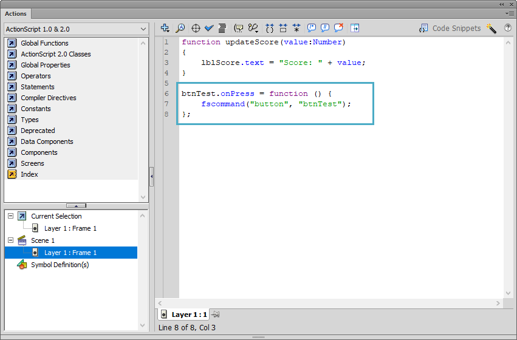
Add the code to Scene → Layer 1: Frame 1Now that you have defined your function, compile your GFx file through the exporter as shown in Chapter 2 - Flash and Gfx, and then add the following adjustments to your UI Elements XML file to expose the event to visual scripting:
<events> <event name="OnButtonPress" fscommand="button" desc="Activated when user clicks the button"> <param name="ButtonName" desc="Name of the button" type="string" /> </event> </events>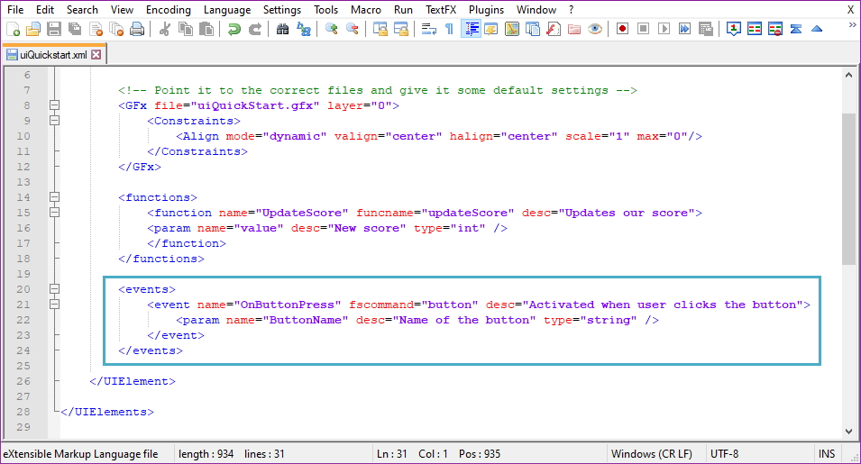
Exposing the event to visual scripting
Scaleform 4
- Begin by creating a new Symbol in your Flash project library. We will call this Symbol "BasicButton" and change its type to a Button.
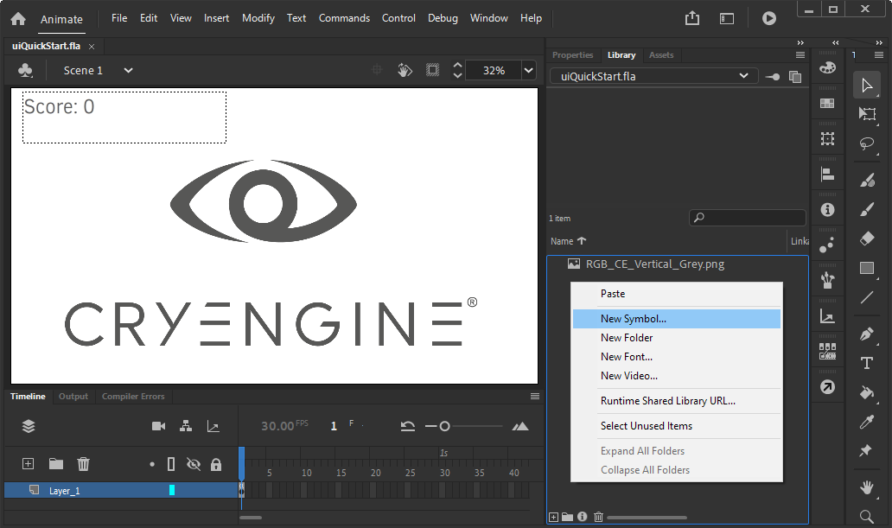
New Symbol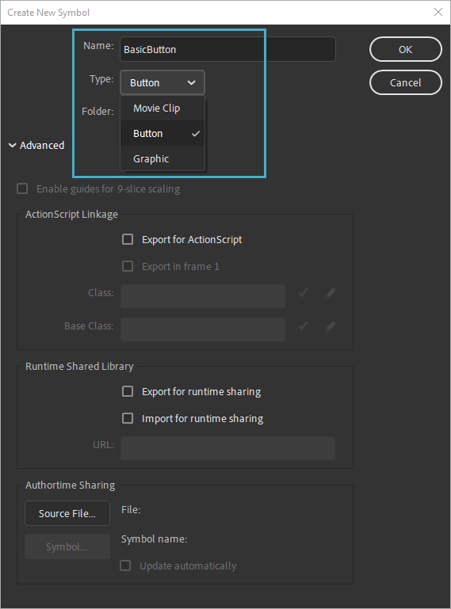
Set Type to "Button" - A new window will appear for your Symbol contents; here, draw a simple rectangle using the Rectangle Tool (R).
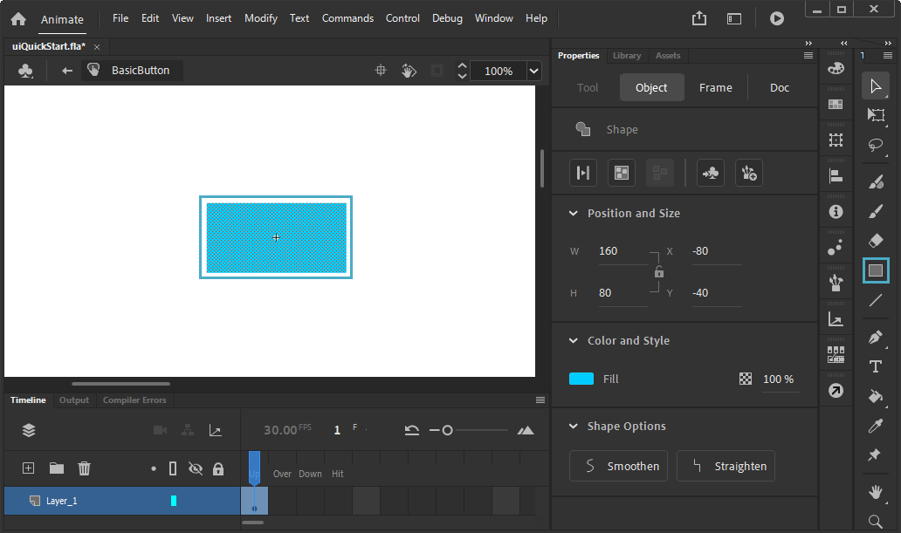
Draw a simple rectangle - You can now return to your scene and from your Library, place an instance of your new BasicButton Symbol within the scene.
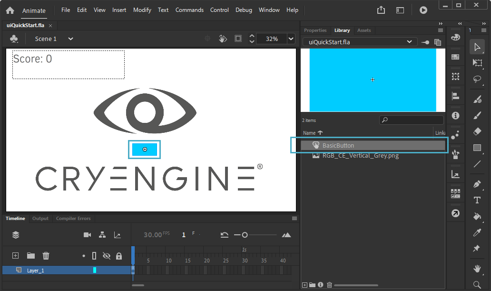
Place an instance of the BasicButton in your scene - Name this instance of the BasicButton Symbol to "btnTest". This is how this button will be referenced via ActionScript.
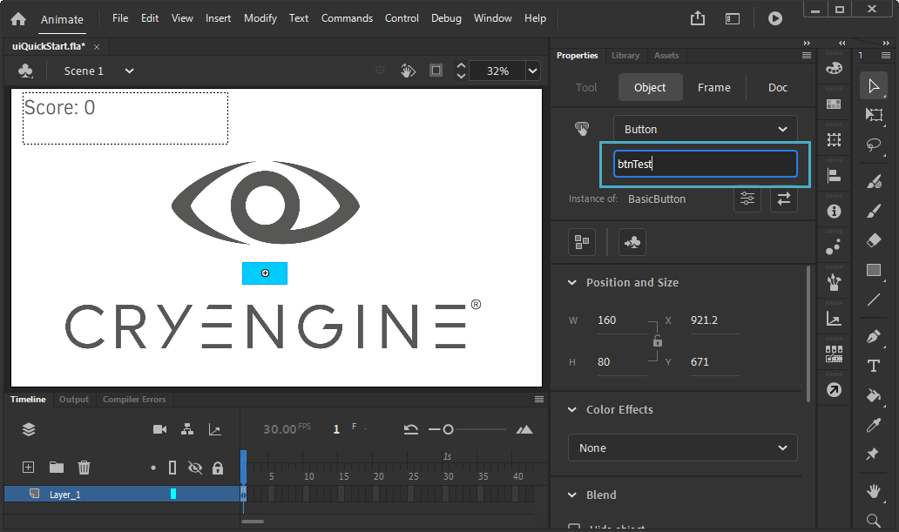
Name the symbol to btnTest Next, open the Actions Window either by pressing F9 or going to Window → Actions in the menu; add the following code after your existing code in Scene 1 → Layer 1: Frame 1:
btnTest.addEventListener(MouseEvent.CLICK, onButtonPress); function onButtonPress(e:MouseEvent): void { if (ExternalInterface.available) { ExternalInterface.call("button", "btnTest"); } }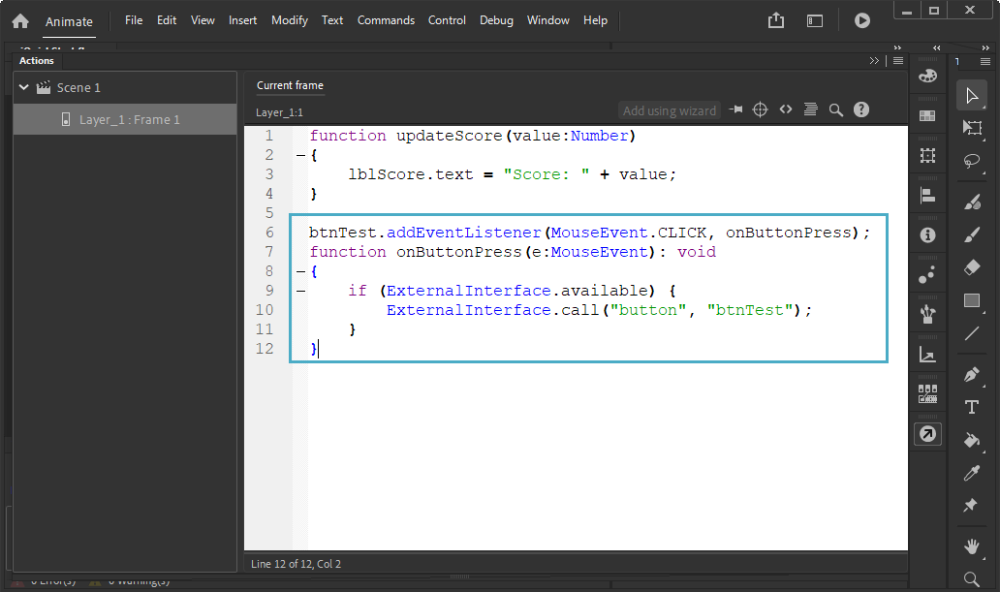
Add the code to Scene → Layer 1: Frame 1Now that you have defined your function, compile your GFx file through the exporter as shown in Chapter 2 - Flash and Gfx, and then add the following adjustments to your UI Elements XML file to expose the event to visual scripting:
<events> <event name="OnButtonPress" fscommand="button" desc="Activated when user clicks the button"> <param name="ButtonName" desc="Name of the button" type="string" /> </event> </events>
Exposing the event to visual scripting